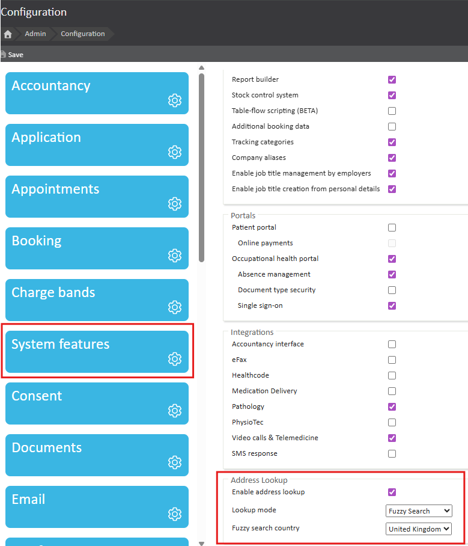
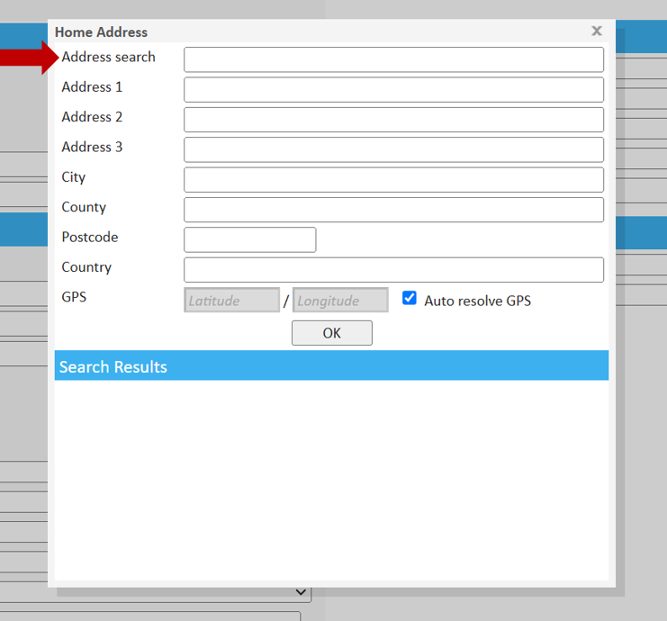
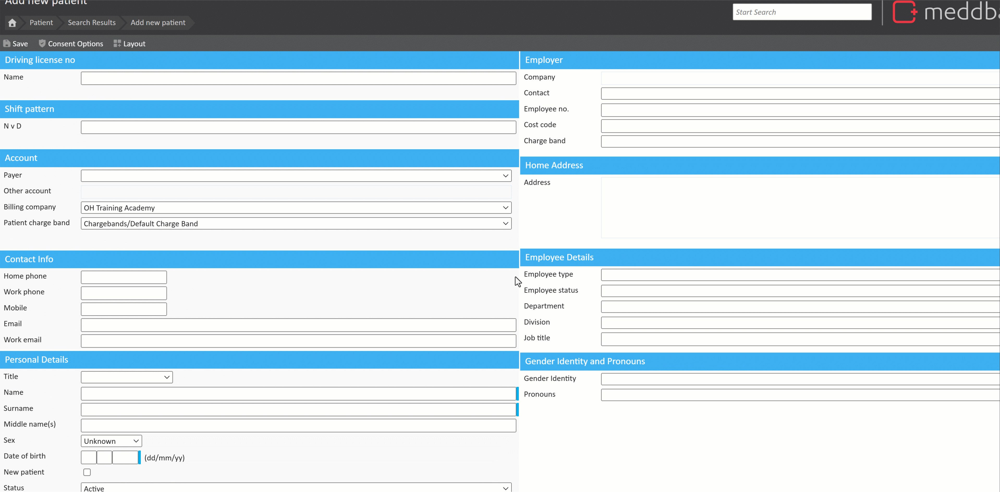

Meddbase's Address Lookup Fuzzy Search feature simplifies the process of entering patient addresses with greater accuracy and speed. This feature helps you quickly find the correct address, even when there are slight variations in spelling, formatting, or missing details. Whether you're dealing with minor typos, different street name variations, or incomplete addresses, the fuzzy search algorithm will suggest the most accurate matches.
In addition to UK addresses, the fuzzy search now supports address lookups in multiple countries, including Australia and New Zealand. This means that no matter where your patients are located, you can confidently enter their addresses with minimal manual effort. This article will guide you through how to use the feature and make the most of its capabilities in your day-to-day operations
The purpose of this article is to provide Meddbase users with a clear understanding of the Address Lookup Fuzzy Search feature, including how it works and how to make the most of its capabilities. This article will explain how the fuzzy search helps improve the accuracy and efficiency of address entry, reducing errors caused by minor variations in spelling or formatting. By the end of this article, you'll have the knowledge to leverage the fuzzy search to streamline address lookups and enhance data entry in Meddbase.
To enable the Address Lookup Fuzzy Search function you will need to navigate to Admin> Configuration> System Features> Address Lookup.
Once Fuzzy Search has been selected as the Lookup mode, you are able to choose a country from the Fuzzy search country drop-down.

The following areas of your chamber (and portal if in use) will now use the selected Fuzzy search country when inputting an address:
Once enabled Address search appears in the window that opens when an address is being entered into Meddbase.

Entering a Postcode or First line of an address into the 'Address Search' field will auto-generate suggested addresses in the 'Search Results' section at the bottom of the window.
